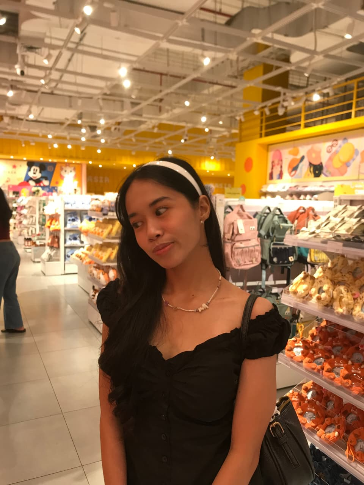

Mahasiswa Sistem Informasi · Institut Teknologi Del
Laura Awise
Saya adalah mahasiswa Sistem Informasi Institut Teknologi Del semester 5 yang tertarik pada bidang teknologi, pengolahan data, dan perancangan antarmuka aplikasi.
- Data Analysis
- UI/UX Design

6
Proyek diselesaikan
2
Bidang fokus utama — Data Analysis & UI/UX
5
Tahap alur kerja, dari riset sampai evaluasi
Portofolio & Capaian
Rekam jejak proyek kuliah dan proyek pribadi yang sudah saya kerjakan.
- PBO
- Analisis & Perancangan
- Kewirausahaan
- UI/UX
- Proyek Pribadi
| No | Nama Proyek | Jenis / Mata Kuliah | Fokus / Kontribusi | Tools |
|---|---|---|---|---|
| 1 | Sistem Manajemen Kampus | PBO | Database Setup, JDBC, Singleton, Schema SQL | JavaJDBCSQL |
| 2 | Sistem Laundry Kampus | Analisis dan Perancangan Sistem | UI/UX dan analisis kebutuhan menggunakan SYRS | UI/UX |
| 3 | Toba Satset | Kewirausahaan | Perancangan bisnis dan UI/UX | Figma |
| 4 | Mom Care | UI/UX | Perancangan UI/UX aplikasi | Figma |
| 5 | SafeScan | Proyek Pribadi | Perancangan UI/UX aplikasi | Figma |
| 6 | Fashion Sales Dashboard | Proyek Pribadi | Rekapitulasi dan visualisasi data penjualan | ExcelPower BI |
| Total Proyek | 6 | |||
Keahlian
Kombinasi kemampuan teknis dan desain yang saya pakai di setiap proyek.
Alur Pengerjaan Proyek
- Memahami kebutuhan pengguna
- Menganalisis permasalahan
- Merancang solusi
- Membangun atau membuat prototype
- Melakukan pengujian dan evaluasi
Formulir Layanan
Butuh bantuan Data Analysis atau UI/UX Design? Isi formulir singkat ini.